Using neural networks to parameterize advection in L96
Contents
Using neural networks to parameterize advection in L96¶
import matplotlib.pyplot as plt
import numpy as np
from IPython.display import HTML
from L96_model import (
L96,
RK2,
RK4,
EulerFwd,
L96_eq1_xdot,
integrate_L96_2t,
)
from matplotlib.animation import FuncAnimation
time_method = RK4
Introduction¶
We are only going to use the single equation model from Lorenz (1996), or equation 3.1:
The reason we do this is because the advection term has a much larger control on the stability of the system than the scale-interaction term. It is fairly difficult to learn a model for the sub-grid scale term that causes L96 to go unstable so long as the timestep is sufficient to keep the advection term stable.
We still want to to look into the stability of a learned parameterization, but to explore the stability in more detail we are going to focus on learning a neural-network for the advection.
Building a 1d and 2d version of the single-equation L96 model:¶
The ‘1d’ in time, or advectionless version of L96 reduces to:
the steady state solution is simply:
and the time-dependent solution is an exponential:
We are going to generate both 2d (w/ advection) and 1d (w/o advection) versions of the L96 model. The 2d model will then be used as training data to build a non-local neural network that can reproduce the effect of including the advection term.
# - This is a standard GCM class including a polynomial parameterization in rhs of equation for tendency.
# In this experiment we will not be using the parameterization in this class but have left it for generality.
class GCM:
def __init__(self, F, parameterization, time_stepping=RK4):
self.F = F
self.parameterization = parameterization
self.time_stepping = time_stepping
def rhs(self, X, param):
return L96_eq1_xdot(X, self.F) + self.parameterization(param, X, self.F)
def __call__(self, X0, dt, nt, param=[0]):
# X0 - initial conditions, dt - time increment, nt - number of forward steps to take
# param - parameters of our closure
time, hist, X = (
dt * np.arange(nt + 1),
np.zeros((nt + 1, len(X0))) * np.nan,
X0.copy(),
)
hist[0] = X
for n in range(nt):
X = self.time_stepping(self.rhs, dt, X, param)
hist[n + 1], time[n + 1] = X, dt * (n + 1)
return hist, time
# - This is the same as the GCM with one notable exception.
# We have set the advection flag to False in the RHS of the L96 equation.
class GCM_1d:
def __init__(self, F, parameterization, time_stepping=time_method):
self.F = F
self.parameterization = parameterization
self.time_stepping = time_stepping
def rhs(self, X, param):
return L96_eq1_xdot(X, self.F, advect=False) + self.parameterization(
param, X, self.F
)
def __call__(self, X0, dt, nt, param=[0]):
# X0 - initial conditions, dt - time increment, nt - number of forward steps to take
# param - parameters of our closure
time, hist, X = (
dt * np.arange(nt + 1),
np.zeros((nt + 1, len(X0))) * np.nan,
X0.copy(),
)
hist[0] = X
for n in range(nt):
X = self.time_stepping(self.rhs, dt, X, param)
hist[n + 1], time[n + 1] = X, dt * (n + 1)
return hist, time
Sample configuration¶
First we will run the 2d and 1d version of the model with a modest forcing of \(F=10\).
We are going to try to simulate the effect of climate model drift on parameter space by running the same model but with \(F=20\).
# Chose a modest forcing and simulate for 100 cycles
Forcing, dt, T = 10, 0.01, 100
Forcing_x10 = 20 # Forcing*10
# Choose an random set of initial conditions
b = 10
init_cond = b * np.random.randn(8)
# ----------------------------------------------------------------
# We create the template 2d GCM here with the polynomial parameterization
# this model will be used to generate training data to learn the advection term.
naive_parameterization = lambda param, X, F: np.polyval(param, X)
gcm_2d = GCM(Forcing, naive_parameterization)
# ----------------------------------------------------------------
# We also create a super GCM for simulation with the forcing of 100.
# This will be used as the truth when we test the ability of the 1d model with the neural network to
# work outside of the parmameter space it was trained.
gcm_2d_x10 = GCM(Forcing_x10, naive_parameterization)
# ----------------------------------------------------------------
# Finally,we build the 1d GCM including the polynomial parameterization,
# and we create the corresponding super GCM with forcing squared.
gcm_1d = GCM_1d(Forcing, naive_parameterization)
gcm_1d_x10 = GCM_1d(Forcing_x10, naive_parameterization)
# Running the 2d and 1d versions of the GCM and GCM with F=100 ("_x10")
x2d, t2d = gcm_2d(
init_cond,
dt,
int(T / dt),
[
0.0,
],
)
x2d_x10, t2d_x10 = gcm_2d_x10(
init_cond,
dt,
int(T / dt),
[
0.0,
],
)
x1d, t1d = gcm_1d(
init_cond,
dt,
int(T / dt),
[
0.0,
],
)
x1d_x10, t1d_x10 = gcm_1d_x10(
init_cond,
dt,
int(T / dt),
[
0.0,
],
)
Metrics:¶
We are going to track the momentum and energy of L96 via the following metrics:
Energy:¶
These metrics are chosen to track the system. We are looking for a conservative property of the L96 system. It turns out in the single equation form of the L96 problem one of these two metrics is conserved by the advection process, which is the energy like term.
for tup in [2, T]:
F, ax = plt.subplots(1, 2, figsize=(10, 4))
a = ax.ravel()[0]
a.plot(t1d, np.sum(x1d, axis=1), label="1d", color="r", linewidth=2)
a.plot(t2d, np.sum(x2d, axis=1), label="2d", color="b", linewidth=2)
a.legend()
a.grid(True)
a.set_title("L96 momentum")
a.set_xlabel("t")
a.set_ylabel(r"$\sum_k X_k$")
a.set_xlim(0, tup)
a = ax.ravel()[1]
a.plot(t1d, np.sum(x1d**2, axis=1), label="1d", color="r", linewidth=2)
a.plot(t2d, np.sum(x2d**2, axis=1), label="2d", color="b", linewidth=2)
a.legend()
a.grid(True)
a.set_title("L96 energy")
a.set_xlabel("t")
a.set_ylabel(r"$\sum_k X_k^2$")
a.set_xlim(0, tup)
F.tight_layout();


Demo: Conservation of energy in L96¶
To demonstrate the conservation of energy in L96 advection we build a model with 0 forcing and 0 damping.
Note that the cyan line is an experiment only undergoing forcing by the advection term. The momentum is clearly not conserved, but the energy is.
# Zero the forcing
Forcing_demo = 0
# Zero the damping via a linear parameterization term:
P_nodamp = [1.0, 0.0]
# Running the 2d and 1d versions of the GCM and GCM with squared forcing ("s")
gcm_2d_demo = GCM(Forcing_demo, naive_parameterization)
# The parameterization here is countering the decay term to demonstrate the conservation of this system
x2d_demo, t2d_demo = gcm_2d_demo(init_cond, dt, int(T / dt), P_nodamp)
for tup in [2, T]:
F, ax = plt.subplots(1, 2, figsize=(10, 4))
a = ax.ravel()[0]
a.plot(
t2d_demo,
np.sum(x2d_demo, axis=1),
label="2d, F=0 no damp",
color="c",
linewidth=2,
)
a.plot(t2d, np.sum(x2d, axis=1), label="2d, F=10", color="b", linewidth=2)
a.legend()
a.grid(True)
a.set_title("L96 momentum")
a.set_xlabel("t")
a.set_ylabel(r"$\sum_k X_k$")
a.set_xlim(0, tup)
a = ax.ravel()[1]
a.plot(
t2d_demo,
np.sum(x2d_demo**2, axis=1),
label="2d, F=0 no damp",
color="c",
linewidth=2,
)
a.plot(t2d, np.sum(x2d**2, axis=1), label="2d, F=10", color="b", linewidth=2)
a.legend()
a.grid(True)
a.set_title("L96 energy")
a.set_xlabel("t")
a.set_ylabel(r"$\sum_k X_k^2$")
a.set_xlim(0, tup)
F.tight_layout();


Building a dataset of advection tendencies to learn¶
In the next section we are going to create a dataset of advection tendencies to learn
# The first set of data to learn is built with the standard forcing
obs = gcm_2d
model = gcm_1d
N = 50000
X = []
Xm1 = []
Xm2 = []
Xp1 = []
Adv = []
# randomize the initial condition and run 1000 time-step spin up with the real world model
init_condr = 10 * np.random.randn(8)
x_2, _ = gcm_2d(
init_condr,
0.01,
1000,
[
0.0,
],
)
for ti in range(N):
# Set the initial condition from the spin up/2d model
init_condr_up = x_2[-1, :]
# Real world values
x_2, _ = obs(
init_condr_up,
0.01,
1,
[
0.0,
],
)
# Simple model values
x_1, _ = model(
init_condr_up,
0.01,
1,
[
0.0,
],
)
# This is the difference in the tendency term due to neglecting 2d processes per time-step
Adv.append((x_2[-1, :] - x_1[-1, :]).ravel() / dt)
# Storing the state variable and its rolled forms for plotting and learning convenience
X.append(x_1[-1, :].ravel())
Xm1.append(np.roll(x_1[-1, :], 1).ravel())
Xm2.append(np.roll(x_1[-1, :], 2).ravel())
Xp1.append(np.roll(x_1[-1, :], -1).ravel())
X = np.array(X)
Xm1 = np.array(Xm1)
Xm2 = np.array(Xm2)
Xp1 = np.array(Xp1)
Adv = np.array(Adv)
# We use a second set of learning data with the F=20 forcing
obs = gcm_2d_x10
model = gcm_1d_x10
N = 50000
X_x10 = []
Xm1_x10 = []
Xm2_x10 = []
Xp1_x10 = []
Adv_x10 = []
# randomize the initial condition and run 1000 time-step spin up with the real world model
init_condr = 10 * np.random.randn(8)
x_2, _ = gcm_2d(
init_condr,
0.01,
1000,
[
0.0,
],
)
for ti in range(N):
# Set the initial condition from the spin up/2d model
init_condr_up = x_2[-1, :]
# Real world values
x_2, _ = obs(
init_condr_up,
0.01,
1,
[
0.0,
],
)
# Simple model values
x_1, _ = model(
init_condr_up,
0.01,
1,
[
0.0,
],
)
# This is the difference in the tendency term due to neglecting 2d processes per time-step
Adv_x10.append((x_2[-1, :] - x_1[-1, :]).ravel() / dt)
# Storing the state variable and its rolled forms for plotting and learning convenience
X_x10.append(x_1[-1, :].ravel())
Xm1_x10.append(np.roll(x_1[-1, :], 1).ravel())
Xm2_x10.append(np.roll(x_1[-1, :], 2).ravel())
Xp1_x10.append(np.roll(x_1[-1, :], -1).ravel())
X_x10 = np.array(X_x10)
Xm1_x10 = np.array(Xm1_x10)
Xm2_x10 = np.array(Xm2_x10)
Xp1_x10 = np.array(Xp1_x10)
Adv_x10 = np.array(Adv_x10)
Choosing a parameter to parameterize from¶
If we were simply looking at data and knew that the advection term was a missing force, we might start by looking at correlations with \(X_k\) values, but we would quickly relize that this is not effective.
Even taking part of the actual advection term does not yield a useful feature parameter.
In principle we should be able to learn a parameterization with all combinations of polynomials including all \(X_k\)’s, which should yield something close to the right answer.
plt.figure()
plt.plot(X, Adv, "k.")
plt.xlabel("$X_{k}$")
plt.ylabel("Advection")
plt.figure()
plt.plot(Xm1, Adv, "k.")
plt.xlabel("$X_{k-1}$")
plt.ylabel("Advection")
plt.figure()
plt.plot(Xp1, Adv, "k.")
plt.xlabel("$X_{k+1}$")
plt.ylabel("Advection")
plt.figure()
plt.plot(Xm2 - Xp1, Adv, "k.")
plt.xlabel("$X_{k-2}-X_{k+1}$")
plt.ylabel("Advection")
Text(0, 0.5, 'Advection')


Let’s now just assume that we knew the form of the advection term. We now get something that looks like a 1:1 linear relationship between the observed advection term and the correct feature parameter. It is not perfect because the values we are using for \(X_k\) are not consistent with the RK4 time stepping (if we used forward Euler we would get a perfit fit).
# We are going to assume we know the feature variable that we need to train the model.
# However, because of sampling across a time-step we will not fit a perfect 1:1,
# we end up with something very close to 1:1, but we will use a higher order polynomial that will
# fail when used outside the training data.
# First we will tune with the original F=10 output
plt.figure(figsize=(5, 4))
Feature = -Xm1 * (np.array(Xm2) - np.array(Xp1))
plt.plot(Feature, Adv, "r.")
plt.xlabel("$X_{k-1}(X_{k-2}-X_{k+1})$")
plt.ylabel("Advection tendency")
# This parameterization might fail when used outside of the training data.
# Note if we used the Forward Euler timestepping we would get closer to a 1:1 fit for the data.
P = np.polyfit(np.array(Feature).ravel(), np.array(Adv).ravel(), 1)
print("Fit (slope/bias): ", P)
FS = [-200, 200]
plt.plot(FS, np.polyval(P, FS), "g-", label="polynomial parameterization")
plt.plot(FS, FS, "k--", label="1:1")
plt.xlim(FS)
plt.ylim(FS)
plt.grid(True)
Fit (slope/bias): [ 1.00369668 -0.08229146]

# Create a new 1d GCM with a parameterization for the advection based on the known advection parameter
advection_parameterization = lambda param, X, F: np.polyval(
param, -np.roll(X, 1) * (np.roll(X, 2) - np.roll(X, -1))
)
gcm_1d_padv = GCM_1d(Forcing, advection_parameterization)
gcm_1d_padv_x10 = GCM_1d(Forcing_x10, advection_parameterization)
# Here is the 1d GCM with the learned advection via the linear parameterization
xplinear, tplinear = gcm_1d_padv(init_cond, dt, int(T / dt), P)
# And the same 1d GCM applied out of sample
xplinear_x10, tplinear_x10 = gcm_1d_padv_x10(init_cond, dt, int(T / dt), P)
def CompExps(Exp1, ExpN):
# Exp1 - reference experiment list
# ExpN - list of comparison experiments
try:
T1 = Exp1[0]
X1 = Exp1[1]
L1 = Exp1[2]
F, ax = plt.subplots(1, 2, figsize=(10, 4))
a = ax.ravel()[0]
a.plot(T1, np.sum(X1, axis=1), label=L1, color="k", linewidth=3)
a = ax.ravel()[1]
a.plot(T1, np.sum(X1**2, axis=1), label=L1, color="k", linewidth=3)
F2, ax2 = plt.subplots(1, figsize=(5, 4))
for Exp in ExpN:
TN = Exp[0]
XN = Exp[1]
LN = Exp[2]
a = ax.ravel()[0]
a.plot(TN, np.sum(XN, axis=1), label=LN, linewidth=2)
a = ax.ravel()[1]
a.plot(TN, np.sum(XN**2, axis=1), label=LN, linewidth=2)
_X = []
_Y = []
for ii in range(1, 100, 1):
_X.append(np.percentile(np.sum(X1[int(5 // dt) :] ** 2, axis=1), ii))
_Y.append(np.percentile(np.sum(XN[int(5 // dt) :] ** 2, axis=1), ii))
ax2.plot(_X, _Y, ".-", label=LN)
for ii in range(2):
a = ax.ravel()[ii]
a.legend()
a.grid(True)
ax[0].set(ylabel=r"$\sum_k X_k$", xlabel=r"$t$")
ax[1].set(ylabel=r"$\sum_k X_k^2$", xlabel=r"$t$")
F.tight_layout()
ax2.grid(True)
ax2.set(
xlabel="e 2d model",
ylabel="e 1d model w/ param",
title="q-q plot of energy in 2d and parameterized model",
)
LIM = np.nanmax(list(_X) + list(_Y))
ax2.set_xlim(0, LIM * 1.1)
ax2.set_ylim(0, LIM * 1.1)
ax2.plot([0, LIM], [0, LIM], "y-")
pass
except:
pass
# This (should) learn a stable 'parameterization' for the advection that is very close to the real advection term.
CompExps(
[t2d, x2d, "2d"],
[
[tplinear, xplinear, "1d w/ linear"],
],
)


# It even extrapolates to the F=20 model
CompExps(
[t2d_x10, x2d_x10, "2d"],
[
[tplinear_x10, xplinear_x10, "1d w/ linear"],
],
)
 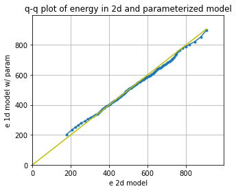
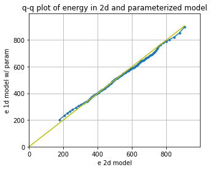
What if we chose the wrong feature?¶
It turns out you can find features that are approximately correct and build a decent model for the advection
# Now we use a feature that is wrong to train the model
plt.figure()
Feature = -(np.array(Xm2) - np.array(Xp1) * np.array(Xm1))
plt.plot(Feature, Adv, "r.")
plt.xlabel("$(X_{k-1}-X_{k+1})$")
plt.ylabel("Advection tendency/Forcing")
P_wrong = np.polyfit(np.array(Feature).ravel(), np.array(Adv).ravel(), 1)
FS = np.sort(np.array(Feature).ravel())
plt.plot(FS, np.polyval(P_wrong, FS), "g-", label="polynomial parameterization");
# Create a new 1d GCM with a 2d parameterization
advection_parameterization_wrong = lambda param, X, F: np.polyval(
param, -(np.roll(X, 2) - np.roll(X, -1) * np.roll(X, 1))
)
gcm_1d_padv_wrong = GCM_1d(Forcing, advection_parameterization_wrong)
# Here is the 1d GCM with the learned advection
x_wrongp, t_wrongp = gcm_1d_padv_wrong(init_cond, dt, int(T / dt), P_wrong)
# This goes unstable very quickly.
# The neural network thus must be trained pretty well to avoid these instabilities.
CompExps(
[t2d, x2d, "2d"],
[
[t_wrongp, x_wrongp, "1d w/ wrong linear"],
],
)
/tmp/ipykernel_2387/3080806922.py:3: RuntimeWarning: overflow encountered in multiply
param, -(np.roll(X, 2) - np.roll(X, -1) * np.roll(X, 1))
/usr/share/miniconda/envs/L96M2lines/lib/python3.9/site-packages/numpy/lib/polynomial.py:771: RuntimeWarning: invalid value encountered in multiply
y = y * x + p[i]


Using the wrong feature gave us a very unstable model with advection that does not work.
In the following, we will try to learn the advection from a neural network. This result shows that we need to do something reasonable to have a stable system.
Using the 3-layer non-local neural network¶
Now we can forget about neading to know the right form of the advection term. We are instead just going to throw the information from the advection scheme to the non-local neural network and let it learn the advection for itself.
These follow the templates from the exercise led by Janni in week 4.
I’m quite new to neural networks, so please let me know if you see any obvious mistakes in my approach!
import torch
import torch.nn.functional as F
import torch.utils.data as Data
import torchvision
from torch import nn, optim
from torch.autograd import Variable
np.random.seed(14) # For reproducibility
torch.manual_seed(14) # For reproducibility
<torch._C.Generator at 0x7fd898d379f0>
I’m going to start by scaling the data so that it is approximately order 1.¶
It looks like we can scaling \(X\) and the advection with the forcing and forcing squared, respectively (we will come back to this assumption).
plt.figure()
plt.plot(X, Adv, "k.")
plt.xlabel("$X_k$")
plt.ylabel("$Adv_k$")
# for F=10
X_F = X / Forcing
Adv_F = Adv / Forcing**2
print("Advection RMS:", np.sqrt(np.mean(Adv**2)))
print("X RMS:", np.sqrt(np.mean(X**2)))
plt.figure()
plt.plot(X_F, Adv_F, "k.")
plt.xlabel("$X_k/F$")
plt.ylabel("$Adv_k/F^2$")
print("Scaled Advection RMS:", np.sqrt(np.mean(Adv_F**2)))
print("Scaled X RMS:", np.sqrt(np.mean(X_F**2)))
# Split into 80% training and 20% testing.
L = int(len(X) * 0.8)
# Create non local training data
# Define a data loader (8 inputs, 8 outputs)
# Define our X,Y pairs (state, subgrid tendency) for the linear regression local network.local_torch_dataset = Data.TensorDataset(
torch_dataset = Data.TensorDataset(
torch.from_numpy(np.array(X_F[:L])).double(),
torch.from_numpy(np.array(Adv_F[:L])).double(),
)
BATCH_SIZE = 1024 # Number of sample in each batch
loader = Data.DataLoader(dataset=torch_dataset, batch_size=BATCH_SIZE, shuffle=True)
print("N training data: ", len(X_F[:L]))
print("N testing data: ", len(X_F[L:]))
# Define a test dataloader (8 inputs, 8 outputs)
torch_dataset_test = Data.TensorDataset(
torch.from_numpy(np.array(X_F[L:])).double(),
torch.from_numpy(np.array(Adv_F[L:])).double(),
)
loader_test = Data.DataLoader(
dataset=torch_dataset_test, batch_size=BATCH_SIZE, shuffle=True
)
Advection RMS: 28.6976010917261
X RMS: 5.14695696464656
Scaled Advection RMS: 0.28697601091726094
Scaled X RMS: 0.5146956964646561
N training data: 40000
N testing data: 10000


# define network structure in pytorch
import torch.nn.functional as FF
class Net_ANN(nn.Module):
def __init__(self):
super(Net_ANN, self).__init__()
self.linear1 = nn.Linear(8, 16) # 8 inputs, 16 neurons for first hidden layer
self.linear2 = nn.Linear(16, 16) # 16 neurons for second hidden layer
self.linear3 = nn.Linear(16, 8) # 8 outputs
# self.lin_drop = nn.Dropout(0.1) #regularization method to prevent overfitting.
def forward(self, x):
x = FF.relu(self.linear1(x))
x = FF.relu(self.linear2(x))
x = self.linear3(x)
return x
def train_model(net, criterion, trainloader, optimizer):
net.train()
test_loss = 0
for step, (batch_x, batch_y) in enumerate(trainloader): # for each training step
b_x = Variable(batch_x) # Inputs
b_y = Variable(batch_y) # outputs
if (
len(b_x.shape) == 1
): # If is needed to add a dummy dimension if our inputs are 1D (where each number is a different sample)
prediction = torch.squeeze(
net(torch.unsqueeze(b_x, 1))
) # input x and predict based on x
else:
prediction = net(b_x)
loss = criterion(prediction, b_y) # Calculating loss
optimizer.zero_grad() # clear gradients for next train
loss.backward() # backpropagation, compute gradients
optimizer.step() # apply gradients to update weights
def test_model(net, criterion, trainloader, optimizer, text="validation"):
net.eval() # Evaluation mode (important when having dropout layers)
test_loss = 0
with torch.no_grad():
for step, (batch_x, batch_y) in enumerate(
trainloader
): # for each training step
b_x = Variable(batch_x) # Inputs
b_y = Variable(batch_y) # outputs
if (
len(b_x.shape) == 1
): # If is needed to add a dummy dimension if our inputs are 1D (where each number is a different sample)
prediction = torch.squeeze(
net(torch.unsqueeze(b_x, 1))
) # input x and predict based on x
else:
prediction = net(b_x)
loss = criterion(prediction, b_y) # Calculating loss
test_loss = test_loss + loss.data.numpy() # Keep track of the loss
test_loss /= len(trainloader) # dividing by the number of batches
# print(len(trainloader))
print(text + " loss:", test_loss)
return test_loss
criterion = torch.nn.MSELoss() # MSE loss function
torch.manual_seed(14) # For reproducibility
nn_3l = Net_ANN().double()
n_epochs = 20 # Number of epocs
optimizer = optim.Adam(nn_3l.parameters(), lr=0.03)
validation_loss = list()
train_loss = list()
# time0 = time()
for epoch in range(1, n_epochs + 1):
train_model(nn_3l, criterion, loader, optimizer)
train_loss.append(test_model(nn_3l, criterion, loader, optimizer, "train"))
validation_loss.append(test_model(nn_3l, criterion, loader_test, optimizer))
plt.plot(train_loss, "b", label="training loss")
plt.plot(validation_loss, "r", label="validation loss")
plt.legend();
train loss: 0.024744801602521738
validation loss: 0.024025452668418743
train loss: 0.0159966468941426
validation loss: 0.015954282550818245
train loss: 0.014927101553872396
validation loss: 0.014708806303907274
train loss: 0.013500950917399326
validation loss: 0.013452959149590289
train loss: 0.012268046439745339
validation loss: 0.012064817456890852
train loss: 0.013367731291990459
validation loss: 0.013237861403768
train loss: 0.011358005320777511
validation loss: 0.011388642918925149
train loss: 0.011768474648963951
validation loss: 0.011775835976830967
train loss: 0.011026411151681426
validation loss: 0.011191046347310121
train loss: 0.011660658064252346
validation loss: 0.011438445141464536
train loss: 0.010795190351039593
validation loss: 0.010568399153166926
train loss: 0.012567255202511849
validation loss: 0.012386225927903121
train loss: 0.010775732783251463
validation loss: 0.01079713125997862
train loss: 0.01040249408258639
validation loss: 0.010333104217461902
train loss: 0.011744997494517257
validation loss: 0.01135531450216076
train loss: 0.010792277430416528
validation loss: 0.010982055145952121
train loss: 0.010220080149262557
validation loss: 0.0101647567714301
train loss: 0.010906252587591257
validation loss: 0.01056087083123381
train loss: 0.01028403604945426
validation loss: 0.010263144235010327
train loss: 0.010929305414339502
validation loss: 0.010868094399284501

# Look how network does for the tendencies
preds22 = nn_3l(torch.from_numpy(np.array(X_F)).double())
plt.figure()
plt.plot(preds22.detach().numpy()[0:1000, 2], label="NN Predicted values")
plt.plot(Adv_F[:1000, 2], label="True values")
plt.legend()
plt.xlim(0, 200)
plt.ylabel("scaled tendency")
plt.xlabel("time step")
plt.figure(figsize=(5, 4.5))
plt.plot(Adv_F[:1000, 2], preds22.detach().numpy()[0:1000, 2], "k.")
plt.xlabel("Actual")
plt.ylabel("Prediction")
plt.grid(True)
plt.plot([-1, 1], [-1, 1], "y-")
pass
Xt = init_cond
Advr = -np.roll(Xt, 1) * (np.roll(Xt, 2) - np.roll(Xt, -1))
nnAdv = nn_3l(torch.from_numpy(np.array(Xt / Forcing)).double()).detach().numpy()
plt.figure()
plt.plot(Advr, "k-", label="Right")
plt.plot(nnAdv * Forcing**2, "r-", label="neural network")
plt.xlabel(r"$k$")
plt.ylabel("Advection tendency")
plt.legend()
<matplotlib.legend.Legend at 0x7fd898fa1100>


# - a GCM class including a neural network parameterization in rhs of equation for tendency
# The advection will be set to False
class GCM_network:
def __init__(self, F, network, time_stepping=time_method):
self.F = F
self.network = network
self.time_stepping = time_stepping
def rhs(self, X, param):
if self.network.linear1.in_features == 1:
X_torch = torch.from_numpy(X / self.F).double()
X_torch = torch.unsqueeze(X_torch, 1)
else:
X_torch = torch.from_numpy(np.expand_dims(X / self.F, 0)).double()
return L96_eq1_xdot(
X,
self.F + self.F**2 * np.squeeze(self.network(X_torch).data.numpy()),
advect=False,
) # Adding NN parameterization
def __call__(self, X0, dt, nt, param=[0]):
# X0 - initial conditions, dt - time increment, nt - number of forward steps to take
# param - parameters of our closure
time, hist, X = (
dt * np.arange(nt + 1),
np.zeros((nt + 1, len(X0))) * np.nan,
X0.copy(),
)
hist[0] = X
for n in range(nt):
X = self.time_stepping(self.rhs, dt, X, param)
hist[n + 1], time[n + 1] = X, dt * (n + 1)
return hist, time
# Run a test with the parameterization
# It takes some time, but usually the network goes unstable eventually
# F=10 model
gcm_nn = GCM_network(Forcing, nn_3l)
xnn, tnn = gcm_nn(init_cond, dt, int(100 / (dt)), nn_3l)
CompExps(
[t2d, x2d, "2d"],
[
[tnn, xnn, "1d w/ neural network"],
],
)


# Try to train the data with slightly higher forcing (will give larger range of advection tendencies to learn)
plt.figure()
plt.plot(X, Adv, "k.")
plt.xlabel("$X_k$")
plt.ylabel("$Adv_k$")
# for F=20
X_F = X_x10 / Forcing_x10
Adv_F = Adv_x10 / Forcing_x10**2
print("Advection RMS:", np.sqrt(np.mean(Adv**2)))
print("X RMS:", np.sqrt(np.mean(X**2)))
plt.figure()
plt.plot(X_F, Adv_F, "k.")
plt.xlabel("$X_k/F$")
plt.ylabel("$Adv_k/F^2$")
print("Scaled Advection RMS:", np.sqrt(np.mean(Adv_F**2)))
print("Scaled X RMS:", np.sqrt(np.mean(X_F**2)))
# Split into 80% training and 20% testing.
L = int(len(X) * 0.8)
# Create non local training data
# Define a data loader (8 inputs, 8 outputs)
# Define our X,Y pairs (state, subgrid tendency) for the linear regression local network.local_torch_dataset = Data.TensorDataset(
torch_dataset = Data.TensorDataset(
torch.from_numpy(np.array(X_F[:L])).double(),
torch.from_numpy(np.array(Adv_F[:L])).double(),
)
BATCH_SIZE = 1024 # Number of sample in each batch
loader = Data.DataLoader(dataset=torch_dataset, batch_size=BATCH_SIZE, shuffle=True)
print("N training data: ", len(X_F[:L]))
print("N testing data: ", len(X_F[L:]))
# Define a test dataloader (8 inputs, 8 outputs)
torch_dataset_test = Data.TensorDataset(
torch.from_numpy(np.array(X_F[L:])).double(),
torch.from_numpy(np.array(Adv_F[L:])).double(),
)
loader_test = Data.DataLoader(
dataset=torch_dataset_test, batch_size=BATCH_SIZE, shuffle=True
)
Advection RMS: 28.6976010917261
X RMS: 5.14695696464656
Scaled Advection RMS: 0.18813508632879836
Scaled X RMS: 0.40793051939791725
N training data: 40000
N testing data: 10000


torch.manual_seed(14) # For reproducibility
nn_3l_x10 = Net_ANN().double()
n_epochs = 20 # Number of epocs
optimizer = optim.Adam(nn_3l_x10.parameters(), lr=0.03)
validation_loss = list()
train_loss = list()
# time0 = time()
for epoch in range(1, n_epochs + 1):
train_model(nn_3l_x10, criterion, loader, optimizer)
train_loss.append(test_model(nn_3l_x10, criterion, loader, optimizer, "train"))
validation_loss.append(test_model(nn_3l_x10, criterion, loader_test, optimizer))
plt.plot(train_loss, "b", label="training loss")
plt.plot(validation_loss, "r", label="validation loss")
plt.legend()
# Look how network does for the tendencies
preds22 = nn_3l_x10(torch.from_numpy(np.array(X_F)).double())
plt.figure()
plt.plot(preds22.detach().numpy()[0:1000, 2], label="NN Predicted values")
plt.plot(Adv_F[:1000, 2], label="True values")
plt.legend()
plt.xlim(0, 200)
plt.ylabel("scaled tendency")
plt.xlabel("time step")
plt.figure(figsize=(5, 4.5))
plt.plot(Adv_F[:1000, 2], preds22.detach().numpy()[0:1000, 2], "k.")
plt.xlabel("Actual")
plt.ylabel("Prediction")
plt.grid(True)
plt.plot([-1, 1], [-1, 1], "y-")
pass
Xt = init_cond
Advr = -np.roll(Xt, 1) * (np.roll(Xt, 2) - np.roll(Xt, -1))
nnAdv = nn_3l_x10(torch.from_numpy(np.array(Xt / Forcing)).double()).detach().numpy()
plt.figure()
plt.plot(Advr, "k-", label="Right")
plt.plot(nnAdv * Forcing_x10**2, "r-", label="neural network")
plt.xlabel(r"$k$")
plt.ylabel("Advection tendency")
plt.legend()
train loss: 0.017337815857587723
validation loss: 0.017210474028383292
train loss: 0.010783627108208715
validation loss: 0.011082002867365265
train loss: 0.008846491039416626
validation loss: 0.009077845762734656
train loss: 0.007988894788096834
validation loss: 0.008255387186920057
train loss: 0.007360280206129155
validation loss: 0.007524712791554612
train loss: 0.0073300554818824405
validation loss: 0.007653012256395709
train loss: 0.006793322352703841
validation loss: 0.007010523513673176
train loss: 0.006870445189449684
validation loss: 0.007073498927800663
train loss: 0.007037058698708232
validation loss: 0.0072334018018370945
train loss: 0.006447121407402977
validation loss: 0.006487508807409106
train loss: 0.0061511388509536144
validation loss: 0.006314939947495234
train loss: 0.006293228258894656
validation loss: 0.006352068908172713
train loss: 0.006889714260757557
validation loss: 0.007041819377391595
train loss: 0.006722357750528386
validation loss: 0.006870342608333889
train loss: 0.006683879058941261
validation loss: 0.006834202832224259
train loss: 0.0059346637541724655
validation loss: 0.0060827170799316954
train loss: 0.006199380767766477
validation loss: 0.006365404397375847
train loss: 0.005978724769245889
validation loss: 0.006127481454706333
train loss: 0.006192390580461279
validation loss: 0.006296180504459246
train loss: 0.005788526689860148
validation loss: 0.005948687067851809
<matplotlib.legend.Legend at 0x7fd88cefe640>


# Run a test with the parameterization built from F=20
# Usually the neural network resulting is much more stable, since it is trained for a wider range of conditions.
# F=10 model
gcm_nn = GCM_network(Forcing, nn_3l_x10)
xnn, tnn = gcm_nn(init_cond, dt, int(100 / (dt)), nn_3l_x10)
CompExps(
[t2d, x2d, "2d"],
[
[tnn, xnn, "1d w/ neural network"],
],
)

# F=20 model fails still
gcm_nn_x10 = GCM_network(Forcing_x10, nn_3l_x10)
xnn_x10, tnn_x10 = gcm_nn_x10(init_cond, dt, int(100 / (dt)), nn_3l_x10)
CompExps(
[t2d_x10, x2d_x10, "2d"],
[
[tnn_x10, xnn_x10, "1d w/ neural network"],
],
)
/usr/share/miniconda/envs/L96M2lines/lib/python3.9/site-packages/matplotlib/ticker.py:2073: RuntimeWarning: overflow encountered in multiply
steps = self._extended_steps * scale


Here we experiment with adding conservation of “momentum”¶
It turns out the L96 advection does not conserve momentum, but this exercise shows that we can build a parameterization that does by adding it to the loss function.
def my_loss2(inpt, output, target):
# In which we add conservation of "momentum" to our loss function
loss = torch.mean(2 * (output - target) ** 2) + torch.mean(
torch.sum(output, axis=1) ** 2
)
return loss
# New training routines that use the new loss function
def train_model2(net, criterion, trainloader, optimizer):
net.train()
test_loss = 0
for step, (batch_x, batch_y) in enumerate(trainloader): # for each training step
b_x = Variable(batch_x) # Inputs
b_y = Variable(batch_y) # outputs
if (
len(b_x.shape) == 1
): # If is needed to add a dummy dimension if our inputs are 1D (where each number is a different sample)
prediction = torch.squeeze(
net(torch.unsqueeze(b_x, 1))
) # input x and predict based on x
else:
prediction = net(b_x)
loss = criterion(b_x, prediction, b_y) # Calculating loss
optimizer.zero_grad() # clear gradients for next train
loss.backward() # backpropagation, compute gradients
optimizer.step() # apply gradients to update weights
def test_model2(net, criterion, trainloader, optimizer, text="validation"):
net.eval() # Evaluation mode (important when having dropout layers)
test_loss = 0
with torch.no_grad():
for step, (batch_x, batch_y) in enumerate(
trainloader
): # for each training step
b_x = Variable(batch_x) # Inputs
b_y = Variable(batch_y) # outputs
if (
len(b_x.shape) == 1
): # If is needed to add a dummy dimension if our inputs are 1D (where each number is a different sample)
prediction = torch.squeeze(
net(torch.unsqueeze(b_x, 1))
) # input x and predict based on x
else:
prediction = net(b_x)
loss = criterion(b_x, prediction, b_y) # Calculating loss
test_loss = test_loss + loss.data.numpy() # Keep track of the loss
test_loss /= len(trainloader) # dividing by the number of batches
# print(len(trainloader))
print(text + " loss:", test_loss)
return test_loss
torch.manual_seed(14) # For reproducibility
nn_3l_loss2 = Net_ANN().double()
n_epochs = 30 # Number of epocs
optimizer = optim.Adam(nn_3l_loss2.parameters(), lr=0.02)
validation_loss = list()
train_loss = list()
# time0 = time()
for epoch in range(1, n_epochs + 1):
train_model2(nn_3l_loss2, my_loss2, loader, optimizer)
train_loss.append(test_model2(nn_3l_loss2, my_loss2, loader, optimizer, "train"))
validation_loss.append(test_model2(nn_3l_loss2, my_loss2, loader_test, optimizer))
plt.plot(train_loss, "b", label="training loss")
plt.plot(validation_loss, "r", label="validation loss")
plt.legend();
train loss: 0.07016639652551718
validation loss: 0.066604646900747
train loss: 0.06313195754249397
validation loss: 0.06086614957638988
train loss: 0.052019144612422366
validation loss: 0.05058536627921747
train loss: 0.045725381733613395
validation loss: 0.044530316761526835
train loss: 0.041245960491580205
validation loss: 0.040287030639326704
train loss: 0.0363630009322567
validation loss: 0.035948554989618096
train loss: 0.03369264614966151
validation loss: 0.033627046354602334
train loss: 0.03177192706934283
validation loss: 0.03187117310254201
train loss: 0.030727415469203545
validation loss: 0.03121565147957135
train loss: 0.02906136024753426
validation loss: 0.029455139915808993
train loss: 0.0283491079501489
validation loss: 0.028965096599951057
train loss: 0.026917168437511053
validation loss: 0.02752185940132129
train loss: 0.025769935135427424
validation loss: 0.02638469257786751
train loss: 0.025592132277870955
validation loss: 0.02606129634136411
train loss: 0.02483475969425148
validation loss: 0.025244734863391783
train loss: 0.024629476533016656
validation loss: 0.02504867689471365
train loss: 0.024402522057123448
validation loss: 0.02475968570437723
train loss: 0.02596127647649358
validation loss: 0.026388541710769497
train loss: 0.025782623601861943
validation loss: 0.02607337923561901
train loss: 0.02870475506813177
validation loss: 0.02901684536819793
train loss: 0.02409924993404489
validation loss: 0.0243542883566019
train loss: 0.023657977795213708
validation loss: 0.023930308496530835
train loss: 0.02495939162016068
validation loss: 0.02510681257974979
train loss: 0.02349945433734841
validation loss: 0.023675265708088315
train loss: 0.023236145976854816
validation loss: 0.023437838719864115
train loss: 0.022963749774485676
validation loss: 0.023111732882446397
train loss: 0.022826528357371693
validation loss: 0.02304981894163737
train loss: 0.023391825350999648
validation loss: 0.023468551452016866
train loss: 0.02254389720449786
validation loss: 0.02267841177698656
train loss: 0.022137978525617844
validation loss: 0.02236858568461119

# The neural network now conserves momentum
preds22o = nn_3l(torch.from_numpy(np.array(X_F)).double())
preds22 = nn_3l_loss2(torch.from_numpy(np.array(X_F)).double())
plt.figure()
plt.plot(preds22.detach().numpy()[0:1000, 2], label="NN Predicted values")
plt.plot(Adv_F[:1000, 2], label="True values")
plt.legend()
plt.figure()
plt.plot(Adv_F[:1000, 2], preds22.detach().numpy()[0:1000, 2], "k.")
plt.xlabel("Actual")
plt.ylabel("Prediction")
plt.figure()
plt.plot(np.sum(preds22o.detach().numpy(), axis=1), "r.", label="original loss")
plt.plot(np.sum(preds22.detach().numpy(), axis=1), "k.", label="new loss")
plt.ylabel("Prediction momentum tendency")
plt.legend()
Xt = init_cond
Advr = -np.roll(Xt, 1) * (np.roll(Xt, 2) - np.roll(Xt, -1))
nnAdv = nn_3l_loss2(torch.from_numpy(np.array(Xt / Forcing)).double()).detach().numpy()
plt.figure()
plt.plot(Advr, "k-", label="actual")
plt.plot(nnAdv * Forcing**2, "r-", label="predicted")
pass;


# This didn't help with stabilization...actually seems to hurt
gcm_nn2 = GCM_network(Forcing, nn_3l_loss2)
xnn2, tnn2 = gcm_nn2(init_cond, dt, int(T / (dt)), nn_3l_loss2)
CompExps(
[t2d, x2d, "2d"],
[
[tnn2, xnn2, "1d w/ NN conserving momentum"],
],
)


How about with some regularization?¶
torch.manual_seed(14) # For reproducibility
nn_3l_loss3 = Net_ANN().double()
n_epochs = 20 # Number of epocs
optimizer = optim.Adam(nn_3l_loss3.parameters(), lr=0.03, weight_decay=0.0015)
validation_loss = list()
train_loss = list()
# time0 = time()
for epoch in range(1, n_epochs + 1):
train_model(nn_3l_loss3, criterion, loader, optimizer)
train_loss.append(test_model(nn_3l_loss3, criterion, loader, optimizer, "train"))
validation_loss.append(test_model(nn_3l_loss3, criterion, loader_test, optimizer))
plt.plot(train_loss, "b", label="training loss")
plt.plot(validation_loss, "r", label="validation loss")
plt.legend()
# Look how network does for the tendencies
preds22 = nn_3l_loss3(torch.from_numpy(np.array(X_F)).double())
plt.figure()
plt.plot(preds22.detach().numpy()[0:1000, 2], label="NN Predicted values")
plt.plot(Adv_F[:1000, 2], label="True values")
plt.legend()
plt.xlim(0, 200)
plt.ylabel("scaled tendency")
plt.xlabel("time step")
plt.figure(figsize=(5, 4.5))
plt.plot(Adv_F[:1000, 2], preds22.detach().numpy()[0:1000, 2], "k.")
plt.xlabel("Actual")
plt.ylabel("Prediction")
plt.grid(True)
plt.plot([-1, 1], [-1, 1], "y-")
pass
Xt = init_cond
Advr = -np.roll(Xt, 1) * (np.roll(Xt, 2) - np.roll(Xt, -1))
nnAdv = (
nn_3l_loss3(torch.from_numpy(np.array(Xt / Forcing_x10)).double()).detach().numpy()
)
plt.figure()
plt.plot(Advr, "k-", label="Right")
plt.plot(nnAdv * Forcing_x10**2, "r-", label="neural network")
plt.xlabel(r"$k$")
plt.ylabel("Advection tendency")
plt.legend()
train loss: 0.027923640847541824
validation loss: 0.02678817721674921
train loss: 0.02361064165019275
validation loss: 0.02317502484480764
train loss: 0.022177647836136027
validation loss: 0.021657580908206346
train loss: 0.020660090968440348
validation loss: 0.020139957635210082
train loss: 0.01983774726371608
validation loss: 0.01924838911038234
train loss: 0.01934464751123782
validation loss: 0.018745403096714335
train loss: 0.01877223442601846
validation loss: 0.01832220925197481
train loss: 0.018449963242207764
validation loss: 0.017964203164424715
train loss: 0.0171434587471321
validation loss: 0.0168522779805892
train loss: 0.016814943366370308
validation loss: 0.016275129839142498
train loss: 0.016189946815369897
validation loss: 0.01599776889183916
train loss: 0.015604346998116855
validation loss: 0.01530372308053857
train loss: 0.016036787034611442
validation loss: 0.01573485148462437
train loss: 0.01586378895554403
validation loss: 0.015510842382621584
train loss: 0.015856626911897428
validation loss: 0.015466138024108945
train loss: 0.015820302632896268
validation loss: 0.015572373344225041
train loss: 0.01616087615168835
validation loss: 0.01588097950684276
train loss: 0.0159187424201314
validation loss: 0.015573238486241347
train loss: 0.015631500536077016
validation loss: 0.015303760387217475
train loss: 0.015920322102993056
validation loss: 0.015692828654568697
<matplotlib.legend.Legend at 0x7fd895cfed90>


# Weight decay regularization can help with stability, but when it does it sometimes ruins the
# model representation of the actual 'physics'
gcm_nn3 = GCM_network(Forcing, nn_3l_loss3)
xnn3, tnn3 = gcm_nn3(init_cond, dt, int(T / (dt)), nn_3l_loss3)
CompExps(
[t2d, x2d, "2d"],
[
[tnn3, xnn3, "1d w/ NN momentum reg."],
],
)
 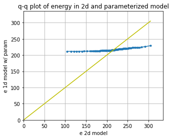
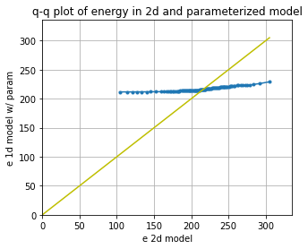
# Here it actually does an okay job of producing the F=20 simulation
gcm_nn3_x10 = GCM_network(Forcing_x10, nn_3l_loss3)
xnn3_x10, tnn3_x10 = gcm_nn3_x10(init_cond, dt, int(T / (dt)), nn_3l_loss3)
CompExps(
[t2d_x10, x2d_x10, "2d"],
[
[tnn3_x10, xnn3_x10, "1d w/ NN momentum reg."],
],
)


Try a different scaling term¶
Could scaling with the Forcing be the issue?
# Use the advection tendencies, splitting into 80% training and 20% testing.
L = int(len(X) * 0.8)
print(L)
ScX = np.sqrt(np.mean(X**2))
X_S = X_x10 / ScX
ScA = np.sqrt(np.mean(Adv**2))
Adv_S = Adv_x10 / ScA
# Create non local training data
# Define a data loader (8 inputs, 8 outputs)
# Define our X,Y pairs (state, subgrid tendency) for the linear regression local network.local_torch_dataset = Data.TensorDataset(
torch_dataset = Data.TensorDataset(
torch.from_numpy(np.array(X_S[:L])).double(),
torch.from_numpy(np.array(Adv_S[:L])).double(),
)
BATCH_SIZE = 1024 # Number of sample in each batch
loader = Data.DataLoader(dataset=torch_dataset, batch_size=BATCH_SIZE, shuffle=True)
# Define a test dataloader (8 inputs, 8 outputs)
torch_dataset_test = Data.TensorDataset(
torch.from_numpy(np.array(X_S[L:])).double(),
torch.from_numpy(np.array(Adv_S[L:])).double(),
)
loader_test = Data.DataLoader(
dataset=torch_dataset_test, batch_size=BATCH_SIZE, shuffle=True
)
40000
torch.manual_seed(14) # For reproducibility
nn_3l_loss4 = Net_ANN().double()
n_epochs = 20 # Number of epocs
optimizer = optim.Adam(nn_3l_loss4.parameters(), lr=0.03, weight_decay=0.001)
validation_loss = list()
train_loss = list()
# time0 = time()
for epoch in range(1, n_epochs + 1):
train_model(nn_3l_loss4, criterion, loader, optimizer)
train_loss.append(test_model(nn_3l_loss4, criterion, loader, optimizer, "train"))
validation_loss.append(test_model(nn_3l_loss4, criterion, loader_test, optimizer))
plt.plot(train_loss, "b", label="training loss")
plt.plot(validation_loss, "r", label="validation loss")
plt.legend()
# Look how network does for the tendencies
preds22 = nn_3l_loss4(torch.from_numpy(np.array(X_S)).double())
plt.figure()
plt.plot(preds22.detach().numpy()[0:1000, 2], label="NN Predicted values")
plt.plot(Adv_S[:1000, 2], label="True values")
plt.legend()
plt.xlim(0, 200)
plt.ylabel("scaled tendency")
plt.xlabel("time step")
plt.figure(figsize=(5, 4.5))
plt.plot(Adv_S[:1000, 2], preds22.detach().numpy()[0:1000, 2], "k.")
plt.xlabel("Actual")
plt.ylabel("Prediction")
plt.grid(True)
plt.plot([-1, 1], [-1, 1], "y-")
pass
Xt = init_cond
Advr = -np.roll(Xt, 1) * (np.roll(Xt, 2) - np.roll(Xt, -1))
nnAdv = nn_3l_loss4(torch.from_numpy(np.array(Xt / ScX)).double()).detach().numpy()
plt.figure()
plt.plot(Advr, "k-", label="Right")
plt.plot(nnAdv * ScA, "r-", label="neural network")
plt.xlabel(r"$k$")
plt.ylabel("Advection tendency")
plt.legend()
train loss: 2.5388346300842675
validation loss: 2.4669483357532416
train loss: 1.580424202581923
validation loss: 1.5921500118549208
train loss: 1.3787443528244492
validation loss: 1.3814663723606815
train loss: 1.1999503591004423
validation loss: 1.214078088828519
train loss: 1.1518651558660298
validation loss: 1.1721624419549261
train loss: 1.0619043571670521
validation loss: 1.0684872889987063
train loss: 1.0977818884527955
validation loss: 1.0848376046790214
train loss: 1.0188300475241243
validation loss: 0.9970357132683254
train loss: 1.0347974548386576
validation loss: 1.018890402856808
train loss: 1.0205428962045189
validation loss: 1.0121508564309714
train loss: 0.9553648420253513
validation loss: 0.9545651268892763
train loss: 0.9546011796013323
validation loss: 0.9581514590752299
train loss: 0.9359148754372766
validation loss: 0.9304247964213592
train loss: 0.9264032812713567
validation loss: 0.9359399954361647
train loss: 0.8822828615831744
validation loss: 0.867045566725837
train loss: 0.9490135366459281
validation loss: 0.9578734320816265
train loss: 0.9114803508075985
validation loss: 0.9011761210491749
train loss: 1.1036477479401072
validation loss: 1.136620644198503
train loss: 0.8979998422066316
validation loss: 0.885772125353693
train loss: 0.8505874910694782
validation loss: 0.8559936322738017
<matplotlib.legend.Legend at 0x7fd88ce78be0>


 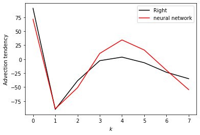
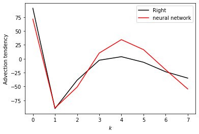
# - a GCM class including a neural network parameterization in rhs of equation for tendency
class GCM_network_S:
def __init__(self, F, network, time_stepping=time_method):
self.F = F
self.network = network
self.time_stepping = time_stepping
def rhs(self, X, param):
if self.network.linear1.in_features == 1:
X_torch = torch.from_numpy(X / ScX).double()
X_torch = torch.unsqueeze(X_torch, 1)
else:
X_torch = torch.from_numpy(np.expand_dims(X / ScX, 0)).double()
return L96_eq1_xdot(
X,
self.F + ScA * np.squeeze(self.network(X_torch).data.numpy()),
advect=False,
) # Adding NN parameterization
def __call__(self, X0, dt, nt, param=[0]):
# X0 - initial conditions, dt - time increment, nt - number of forward steps to take
# param - parameters of our closure
time, hist, X = (
dt * np.arange(nt + 1),
np.zeros((nt + 1, len(X0))) * np.nan,
X0.copy(),
)
hist[0] = X
for n in range(nt):
X = self.time_stepping(self.rhs, dt, X, param)
hist[n + 1], time[n + 1] = X, dt * (n + 1)
return hist, time
# Usually the network this produces works okay w/ F=10
gcm_nn4 = GCM_network_S(Forcing, nn_3l_loss4)
xnn4, tnn4 = gcm_nn4(init_cond, dt, int(T / dt), nn_3l_loss4)
CompExps(
[t2d, x2d, "2d"],
[
[tnn4, xnn4, "1d w/ rescaled NN mom."],
],
)
 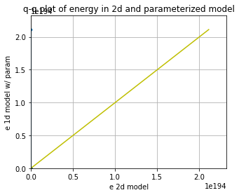
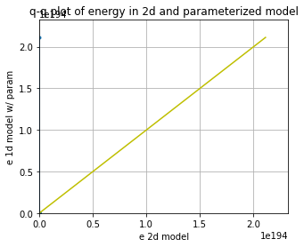
# This might work well for F=20
gcm_nn4_x10 = GCM_network_S(Forcing_x10, nn_3l_loss4)
xnn4_x10, tnn4_x10 = gcm_nn4_x10(init_cond, dt, int(T / dt), nn_3l_loss4)
CompExps(
[t2d_x10, x2d_x10, "2d"],
[
[tnn4_x10, xnn4_x10, "1d w/ rescaled NN mom."],
],
)


The actual conservation law should be for “energy”¶
Does this stabilize the model?
def my_loss3(inpt, output, target):
# In which we replace conservation of "momentum" with conservation of "energy"
loss = torch.mean(2 * (output - target) ** 2) + WT * torch.mean(
torch.sum(inpt * output, axis=1) ** 2
)
return loss
WT = 1
torch.manual_seed(14) # For reproducibility
nn_3l_loss5 = Net_ANN().double()
n_epochs = 50 # Number of epocs
optimizer = optim.Adam(nn_3l_loss5.parameters(), lr=0.01)
validation_loss = list()
train_loss = list()
# time0 = time()
for epoch in range(1, n_epochs + 1):
train_model2(nn_3l_loss5, my_loss3, loader, optimizer)
train_loss.append(test_model2(nn_3l_loss5, my_loss3, loader, optimizer, "train"))
validation_loss.append(test_model2(nn_3l_loss5, my_loss3, loader_test, optimizer))
plt.plot(train_loss, "b", label="training loss")
plt.plot(validation_loss, "r", label="validation loss")
plt.legend();
train loss: 11.233776673234624
validation loss: 10.90218845572944
train loss: 9.139199173965839
validation loss: 9.149351478196229
train loss: 8.199057978530906
validation loss: 8.311262122216425
train loss: 7.75882490591043
validation loss: 7.944885881334213
train loss: 7.328221215187597
validation loss: 7.58458205753278
train loss: 7.288106449332974
validation loss: 7.432105116892407
train loss: 7.133825340745413
validation loss: 7.370243741029763
train loss: 6.970890757793216
validation loss: 7.182910244320569
train loss: 6.761192327599696
validation loss: 6.970639048685099
train loss: 6.8119841184365715
validation loss: 6.9494251293354115
train loss: 6.896489259362438
validation loss: 7.07855071620174
train loss: 6.360098918054442
validation loss: 6.600128198262404
train loss: 6.581087758861986
validation loss: 6.82378216040793
train loss: 6.538190088845449
validation loss: 6.772668425924088
train loss: 6.359827431378273
validation loss: 6.586497265689656
train loss: 6.076608214910436
validation loss: 6.262919315301891
train loss: 6.155693639666856
validation loss: 6.349366156608018
train loss: 5.932060850512963
validation loss: 6.172455262896262
train loss: 6.492082885849887
validation loss: 6.6966465303023455
train loss: 5.822944671842869
validation loss: 6.084359481029926
train loss: 5.87070471281352
validation loss: 6.09950683391466
train loss: 5.998632049750616
validation loss: 6.246678553081161
train loss: 5.834913965397684
validation loss: 6.068444921945957
train loss: 5.847916973778223
validation loss: 6.09942591354333
train loss: 5.970984972892938
validation loss: 6.177924169957362
train loss: 5.753005581581184
validation loss: 5.963720748691473
train loss: 5.77341091635287
validation loss: 6.071318310903624
train loss: 5.713914145921317
validation loss: 5.92059980090534
train loss: 5.700628862923031
validation loss: 5.90058654054384
train loss: 5.799301796802363
validation loss: 5.994801517752682
train loss: 5.689093447829002
validation loss: 5.9145219146590176
train loss: 5.681909617299738
validation loss: 5.937419987920004
train loss: 5.829986273031513
validation loss: 6.135857668331328
train loss: 5.64236486877188
validation loss: 5.884296156594741
train loss: 5.764461153792262
validation loss: 5.956762229315988
train loss: 5.51725190134219
validation loss: 5.689384759233614
train loss: 5.408233739574316
validation loss: 5.596051815740844
train loss: 5.524963938591947
validation loss: 5.704401209503542
train loss: 5.438333137965975
validation loss: 5.641956624698966
train loss: 5.526192090015771
validation loss: 5.708599757650701
train loss: 5.4188320159406995
validation loss: 5.617510823508086
train loss: 5.420354525180817
validation loss: 5.663786083637115
train loss: 5.534058079033947
validation loss: 5.699257242850532
train loss: 5.64327341868979
validation loss: 5.882435424255488
train loss: 5.41768436384017
validation loss: 5.661948680354465
train loss: 5.348724498900315
validation loss: 5.608566633426036
train loss: 5.453365940153617
validation loss: 5.633416349487223
train loss: 5.352491170754196
validation loss: 5.5717988955163165
train loss: 5.398035823152051
validation loss: 5.676352808450956
train loss: 5.570533345156158
validation loss: 5.802955661812336

preds22o = nn_3l_loss4(torch.from_numpy(np.array(X_S)).double())
preds22 = nn_3l_loss5(torch.from_numpy(np.array(X_S)).double())
plt.figure()
plt.plot(preds22.detach().numpy()[0:1000, 2], label="NN Predicted values")
plt.plot(Adv_S[:1000, 2], label="True values")
plt.legend()
plt.figure()
plt.plot(Adv_S[:1000, 2], preds22.detach().numpy()[0:1000, 2], "k.")
plt.xlabel("Actual")
plt.ylabel("Prediction")
plt.figure()
plt.plot(np.sum(X * preds22o.detach().numpy() * ScA, axis=1), "r.")
plt.plot(np.sum(X * preds22.detach().numpy() * ScA, axis=1), "k.")
plt.ylabel("Prediction energy")
Xt = init_cond
Advr = -np.roll(Xt, 1) * (np.roll(Xt, 2) - np.roll(Xt, -1))
nnAdv = nn_3l_loss5(torch.from_numpy(np.array(Xt / Forcing)).double()).detach().numpy()
plt.figure()
plt.plot(Advr, "k-", label="actual")
plt.plot(nnAdv * Forcing**2, "r-", label="predicted")
pass;

 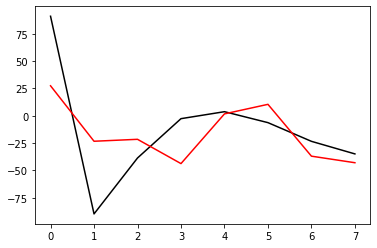
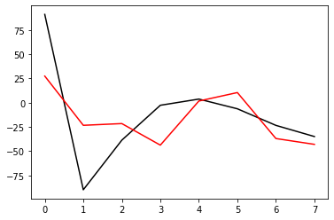
gcm_nn5 = GCM_network_S(Forcing, nn_3l_loss5)
xnn5, tnn5 = gcm_nn5(init_cond, dt, int(T / dt), nn_3l_loss5)
CompExps(
[t2d, x2d, "2d"],
[
[tnn5, xnn5, "1d w/ rescaled NN enrgy."],
],
)


gcm_nn5_x10 = GCM_network_S(Forcing_x10, nn_3l_loss5)
xnn5_x10, tnn5_x10 = gcm_nn5_x10(init_cond, dt, int(T / dt), nn_3l_loss5)
CompExps(
[t2d_x10, x2d_x10, "2d"],
[
[tnn5_x10, xnn5_x10, "1d w/ rescaled NN enrgy."],
],
)


# Try with a higher weight?
WT = 50
torch.manual_seed(14) # For reproducibility
nn_3l_loss6 = Net_ANN().double()
n_epochs = 50 # Number of epocs
optimizer = optim.Adam(nn_3l_loss6.parameters(), lr=0.01)
validation_loss = list()
train_loss = list()
# time0 = time()
for epoch in range(1, n_epochs + 1):
train_model2(nn_3l_loss6, my_loss3, loader, optimizer)
train_loss.append(test_model2(nn_3l_loss6, my_loss3, loader, optimizer, "train"))
validation_loss.append(test_model2(nn_3l_loss6, my_loss3, loader_test, optimizer))
plt.plot(train_loss, "b", label="training loss")
plt.plot(validation_loss, "r", label="validation loss")
plt.legend();
train loss: 14.095773490333595
validation loss: 13.388996493540557
train loss: 13.896227240186722
validation loss: 13.253593264716239
train loss: 13.86408903061421
validation loss: 13.230594475399855
train loss: 13.853177570329715
validation loss: 13.214777030884159
train loss: 13.85491860883364
validation loss: 13.208045370878116
train loss: 13.889075076215793
validation loss: 13.196619163966096
train loss: 13.83597042401552
validation loss: 13.185250289731172
train loss: 13.880076310646098
validation loss: 13.182570038109494
train loss: 13.762537979627663
validation loss: 13.14209132785343
train loss: 13.867475230569898
validation loss: 13.122340990117944
train loss: 13.723902699610335
validation loss: 13.046830182516732
train loss: 14.26148579822538
validation loss: 13.604611868929641
train loss: 13.423647868923865
validation loss: 12.83605312780426
train loss: 13.678436456730571
validation loss: 13.148935881406464
train loss: 13.296892589092261
validation loss: 12.654605651474032
train loss: 13.20281513910651
validation loss: 12.624787319209814
train loss: 13.041525570605376
validation loss: 12.51130772605374
train loss: 12.854026242675364
validation loss: 12.3390181354828
train loss: 12.98758310327857
validation loss: 12.443543801843827
train loss: 13.15853444175175
validation loss: 12.68017259208352
train loss: 14.625564420799247
validation loss: 14.037654965636372
train loss: 12.778419645250576
validation loss: 12.322335120088184
train loss: 12.801680967034509
validation loss: 12.252122666236465
train loss: 13.618068105922664
validation loss: 13.150382705897579
train loss: 12.478293721034003
validation loss: 11.991945600689192
train loss: 13.00682577896138
validation loss: 12.54664294426215
train loss: 12.483028475020626
validation loss: 12.036928072200677
train loss: 12.296784349966297
validation loss: 11.845615830204505
train loss: 12.304666298102198
validation loss: 11.863051086700246
train loss: 12.984773939724866
validation loss: 12.54253098117098
train loss: 12.448511443802781
validation loss: 11.961144961233142
train loss: 12.223515330005226
validation loss: 11.8152626535087
train loss: 12.312531135415295
validation loss: 11.816802704766392
train loss: 12.303821358179718
validation loss: 11.913636328566023
train loss: 12.328299925149889
validation loss: 11.860235644854507
train loss: 12.990121469219488
validation loss: 12.574077402934439
train loss: 12.424905181518245
validation loss: 11.905305985430495
train loss: 12.497779433934195
validation loss: 12.044688546278248
train loss: 12.698091646713817
validation loss: 12.199544666255253
train loss: 12.042383754255612
validation loss: 11.640487714274947
train loss: 12.601962752217977
validation loss: 12.107583457405374
train loss: 12.583225072385636
validation loss: 12.121578916245806
train loss: 11.87812528279581
validation loss: 11.496324723533116
train loss: 11.937666956629823
validation loss: 11.557680505749023
train loss: 11.910916505869196
validation loss: 11.575639592129432
train loss: 12.000939244607064
validation loss: 11.740744925971521
train loss: 12.029704863873103
validation loss: 11.722667546715982
train loss: 13.15680235783872
validation loss: 12.683604811845786
train loss: 12.098414488310116
validation loss: 11.631860440765452
train loss: 12.299458697786879
validation loss: 11.905149376132567

preds22o = nn_3l_loss5(torch.from_numpy(np.array(X_S)).double())
preds22 = nn_3l_loss6(torch.from_numpy(np.array(X_S)).double())
plt.figure()
plt.plot(preds22.detach().numpy()[0:1000, 2], label="NN Predicted values")
plt.plot(Adv_S[:1000, 2], label="True values")
plt.legend()
plt.figure()
plt.plot(Adv_S[:1000, 2], preds22.detach().numpy()[0:1000, 2], "k.")
plt.xlabel("Actual")
plt.ylabel("Prediction")
plt.figure()
plt.plot(np.sum(preds22o.detach().numpy(), axis=1) * ScA, "r.")
plt.plot(np.sum(preds22.detach().numpy(), axis=1) * ScA, "k.")
plt.ylabel("Prediction momentum")
plt.figure()
plt.plot(np.sum(X * preds22o.detach().numpy(), axis=1) * ScA, "r.")
plt.plot(np.sum(X * preds22.detach().numpy(), axis=1) * ScA, "k.")
plt.ylabel("Prediction energy")
Xt = init_cond
Advr = -np.roll(Xt, 1) * (np.roll(Xt, 2) - np.roll(Xt, -1))
nnAdv = nn_3l_loss6(torch.from_numpy(np.array(Xt / Forcing)).double()).detach().numpy()
plt.figure()
plt.plot(Advr, "k-", label="actual")
plt.plot(nnAdv * Forcing**2, "r-", label="predicted")
pass;


gcm_nn6 = GCM_network_S(Forcing, nn_3l_loss6)
xnn6, tnn6 = gcm_nn6(init_cond, dt, int(T / dt), nn_3l_loss6)
gcm_nn6_x10 = GCM_network_S(Forcing_x10, nn_3l_loss6)
xnn6_x10, tnn6_x10 = gcm_nn6_x10(init_cond, dt, int(T / dt), nn_3l_loss6)
CompExps(
[t2d, x2d, "2d"],
[
[tnn6, xnn6, "1d w/ rescaled NN enrgy 20"],
],
)
 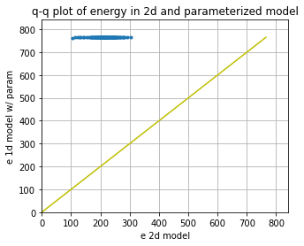
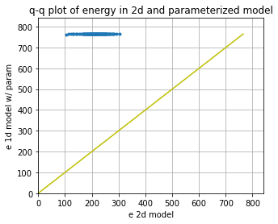
CompExps(
[t2d_x10, x2d_x10, "2d"],
[
[tnn6_x10, xnn6_x10, "1d w/ rescaled NN enrgy 20"],
],
)
NN inside of time-stepping algorithm¶
One issue may be that the network is applied as a forward Euler step. Let’s try moving the network inside the RHS that is passed to the RK4 algorithm
import torch
def L96_eq1_xdot_NN(X, F, NN, advect=True):
"""
Calculate the time rate of change for the X variables for the Lorenz '96, equation 1:
d/dt X[k] = -X[k-2] X[k-1] + X[k-1] X[k+1] - X[k] + F
Args:
X : Values of X variables at the current time step
F : Forcing term
Returns:
dXdt : Array of X time tendencies
"""
K = len(X)
Xdot = np.zeros(K)
if NN.linear1.in_features == 1:
X_torch = torch.from_numpy(X / ScX).double()
X_torch = torch.unsqueeze(X_torch, 1)
else:
X_torch = torch.from_numpy(np.expand_dims(X / ScX, 0)).double()
if advect:
Xdot = np.roll(X, 1) * (np.roll(X, -1) - np.roll(X, 2)) - X + F
else:
Xdot = -X + F + ScA * np.squeeze(NN(X_torch).data.numpy())
# for k in range(K):
# Xdot[k] = ( X[(k+1)%K] - X[k-2] ) * X[k-1] - X[k] + F
return Xdot
# - a GCM class including a neural network parameterization in rhs of equation for tendency
class GCM_network_tsNN:
def __init__(self, F, network, time_stepping=time_method):
self.F = F
self.network = network
self.time_stepping = time_stepping
def rhs(self, X, param):
return L96_eq1_xdot_NN(
X, self.F, self.network, advect=False
) # Adding NN parameterization
def __call__(self, X0, dt, nt, param=[0]):
# X0 - initial conditions, dt - time increment, nt - number of forward steps to take
# param - parameters of our closure
time, hist, X = (
dt * np.arange(nt + 1),
np.zeros((nt + 1, len(X0))) * np.nan,
X0.copy(),
)
hist[0] = X
for n in range(nt):
X = self.time_stepping(self.rhs, dt, X, param)
hist[n + 1], time[n + 1] = X, dt * (n + 1)
return hist, time
# Run a test with the parameterization
gcm_nnRK = GCM_network_tsNN(Forcing, nn_3l_x10, time_stepping=RK4)
xnnRK, tnnRK = gcm_nnRK(init_cond, dt, int(100 / (dt)), nn_3l)
CompExps(
[t2d, x2d, "2d"],
[
[tnnRK, xnnRK, "1d w/ RK4 neural network"],
],
)


# Run a test with the parameterization
gcm_nnRK_x10 = GCM_network_tsNN(Forcing_x10, nn_3l_x10, time_stepping=RK4)
xnnRK_x10, tnnRK_x10 = gcm_nnRK_x10(init_cond, dt, int(100 / (dt)), nn_3l)
CompExps(
[t2d_x10, x2d_x10, "2d"],
[
[tnnRK_x10, xnnRK_x10, "1d w/ RK4 neural network"],
],
)


Conclusions¶
Conservation properties can be added to the loss function, but may not improve stability.
Conservation can unintentially over-regulate a network.
Training a network for a wider parameter space than the model sees can help with stability.
Training with F=20 helps F=10 stay stable
Training for too broad of a parameter space may limit model ability to capture complex behavior (not shown, with F=100 tuning)
Careful scaling is needed to help extrapolate results across parameter space.
It was wrong to scale with forcing, scaling from the mean helps.
We could also consider more stability approaches, for example:
How you build the parameterization matters. Building a parameterization for a flux instead of a flux tendency can help avoid non-conservation (not as applicable to our problem here, but seen in boundary layer parameterizations).
Coupled online learning can help tune networks that can learn evolving parameter spaces (see Rasp 2020 and their notebooks).